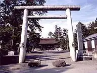
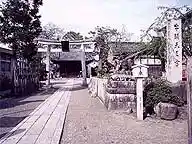

Kora
Kora · Shiga
Kora
Highlighted on the Shiga map.

Sights
Kora Shrine (Kora Amako)
Ogawara Shrine

Hachiman Shrine (Kora)
Shoraku Tera
Koto Miyama Saimyo Tera (Ike Tera)
Kora Ritsu Library (Manabi Sha)
Omitetsudo Amako Eki
Kora Town Hall